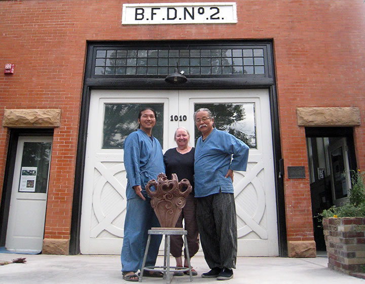
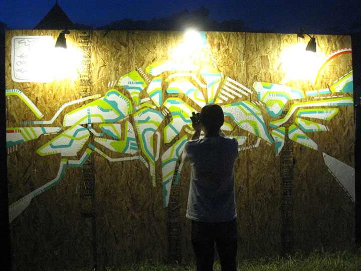
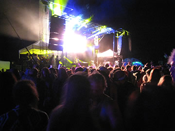
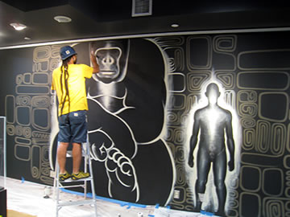
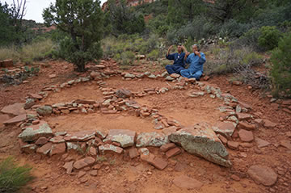

― これまでのイベント（記録） ―

|
今回アメリカでオープンした ARTs of JOMON in DENVER 展に先立ち、関係する縄文アーティスト８名
が渡米して、展示準備のほかコロラド州・アリゾナ州各地で縄文アートのプロジェクトや交流活動を展開し
ました。
【渡米作家（50音順）】
猪風来（縄文造形家）／大薮龍二郎（陶芸家）／大山康太郎 a.k.a. Mon（ライブペインター／DJ）／
小林武人（3DGGデザイナー）／坂巻善徳 a.k.a. sense（美術家）／篠崎裕美子（陶芸家）／
村上原野（縄文造形家）／廣川慶明（フォトグラファー）

|

|
| 【ARTs of JOMON in DENVER 展示準備作業】 | |
=∴=∵=∴=∵=∴=∵=∴=∵=∴=∵=∴=∵=∴=∵=∴=∵=∴=∵=∴=∵=∴=∵=∴=∵=∴=∵=∴=
●縄文ワークショップ
（８月１５日,１６日 コロラド州ボルダー市）
ボルダー・ポッタリー・ラボ（Boulder Pottery Lab）で猪風来、大薮龍二郎、村上原野を講師として
縄文ワークショップを開催。

|

|
| 【ワークショップ見本作品の制作】 | |

|

|
| 【スライドレクチャーと縄文の道具作りワークショップ】 | |

|

|

|

|
| 【縄文造形実践ワークショップ】 | |

|
|
| 【ワークショップ参加者の方々と】 | |
猪風来、大薮龍二郎、村上原野の三人が館内で制作した作品三点を、縄文アート交流のあかしとして、
ボルダー・ポッタリー・ラボ代表のナンシー氏に寄贈しました。
|  | |
| 【作品寄贈】 |
=∴=∵=∴=∵=∴=∵=∴=∵=∴=∵=∴=∵=∴=∵=∴=∵=∴=∵=∴=∵=∴=∵=∴=∵=∴=∵=∴=
●ARISE Music Festival
（８月７日～９日 コロラド州ボルダー市）
8000人が集まった音楽フェスティバルの会場ギャラリースペース横にパネルを設営、開催期間中に
sense が壁画をライブペイントを実施。
大薮龍二郎、村上原野がサポートとして参加。
|  | |

|
 |

|

|
| 【ARISE Music Festival 会場と壁画】 | |
=∴=∵=∴=∵=∴=∵=∴=∵=∴=∵=∴=∵=∴=∵=∴=∵=∴=∵=∴=∵=∴=∵=∴=∵=∴=∵=∴=
●Mural Project
（８月１１日～２２日 コロラド州デンバー市）
デンバー市内のチェリークリーク（Cherry Creek）で sense, Mon が壁画制作を実施。
=∴=∵=∴=∵=∴=∵=∴=∵=∴=∵=∴=∵=∴=∵=∴=∵=∴=∵=∴=∵=∴=∵=∴=∵=∴=∵=∴=
●ギャラリー壁画
（８月１７日～２２日 コロラド州デンバー国際空港）
デンバー国際空港ターミナルギャラリー内に壁画制作を実施。

|
|
|  |

|
| 【ギャラリー壁画制作】 | |
=∴=∵=∴=∵=∴=∵=∴=∵=∴=∵=∴=∵=∴=∵=∴=∵=∴=∵=∴=∵=∴=∵=∴=∵=∴=∵=∴=
●レセプション
（８月２０日 コロラド州デンバー市）
デンバー市内のＤＯＭＯ（日本料理レストラン）にてデンバー市のアート関係者らを招いた日本の縄文
アーティストとの交流パーティ。
およそ50名が参加。

|
|

|

|
| 【レセプション】 | |
=∴=∵=∴=∵=∴=∵=∴=∵=∴=∵=∴=∵=∴=∵=∴=∵=∴=∵=∴=∵=∴=∵=∴=∵=∴=∵=∴=
●ホピ探訪
（８月２２日，２３日 アリゾナ州ホピ・メサ）
ホピ族（ネイティブアメリカン）のルーベン氏を訪ね、猪風来、村上原野が縄文とホピの文化交流。
TEWA村で開催されたSocial Danceに参加。
ファースト・メサでホピの陶芸家ドロシー氏によるホピ式野焼きを拝見。
|
ホピのメサ内では写真撮影が禁止されています |
アリゾナ州セドナ市でホピの源流といわれるシワナ族遺跡へ行き、岩絵やボルテックスのメディスン・ホール、
“大地の子宮”などを訪れる。

|
|
|  |

|
| 【シナワ族の遺跡（岩絵、ボルテックスにて）】 | |
=∴=∵=∴=∵=∴=∵=∴=∵=∴=∵=∴=∵=∴=∵=∴=∵=∴=∵=∴=∵=∴=∵=∴=∵=∴=∵=∴=